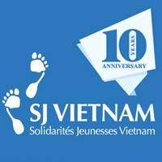
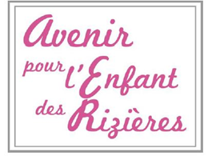

Pour réaliser nos ateliers musicaux, nous avons soigneusement selectionnés des ONGs locales, dont les objectifs et ambitions entraient en résonnance avec les notres
Présentations de nos OGNs partenaires
AJEEA - Ouagadougou, Burkina Faso
L’Association de Jeunesse pour l’Epanouissement des Enfants et Adolescents (AJEEA) est une association basée sur le développement local, où la participation communautaire est le maître mot des actions menées en faveur des enfants, des adolescents et des femmes. L’éducation, le bien-être social et la promotion socio-économique sont au cœur de ses actions.
SJ Vietnam
Solidarités Jeunesses Vietnam (SJ Vietnam) is an international youth NGO (Non-Governmental Organization) that promotes values of solidarity, peace and tolerance through youth citizenship projects to improve society during and after the voluntarism. It was set up in 2004 by international and Vietnamese volunteers with the coordination of Mr Pierre De Hanscutter and Miss Do Thi Phuc. SJ Vietnam is managed by and for young volunteers with the support of UNDP Vietnam at the beginning. SJ Vietnam is an independent Vietnamese branch of SJ France, a full member of CCVIS (UNESCO) and NVDA, a partner of YAP and Alliance. SJ Vietnam is an independent, non-political and non-religious organization open to everybody without any distinction of nationality, race, philosophy, financial resource, education or sex. In 2009, SJ Vietnam officially hosted 500 international volunteers and counted 3256 local members aged between 15 and 35 years old.
AER Cambodge
L’Avenir pour l'Enfant des Rizières s’est donné pour vocation d’apporter à des familles et leurs enfants en situation de pauvreté et de précarité, les moyens de vivre décemment, leur permettant ainsi de participer au mieux au développement de leur pays.
Mi Rancho
Une association Bolivienne, faisant partie de la fondation Plataforma Unidos.